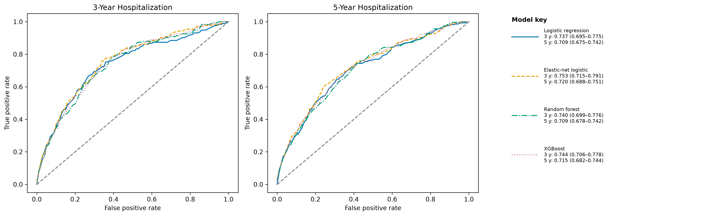
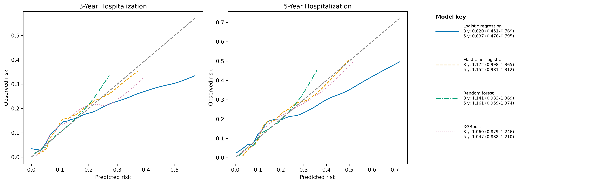
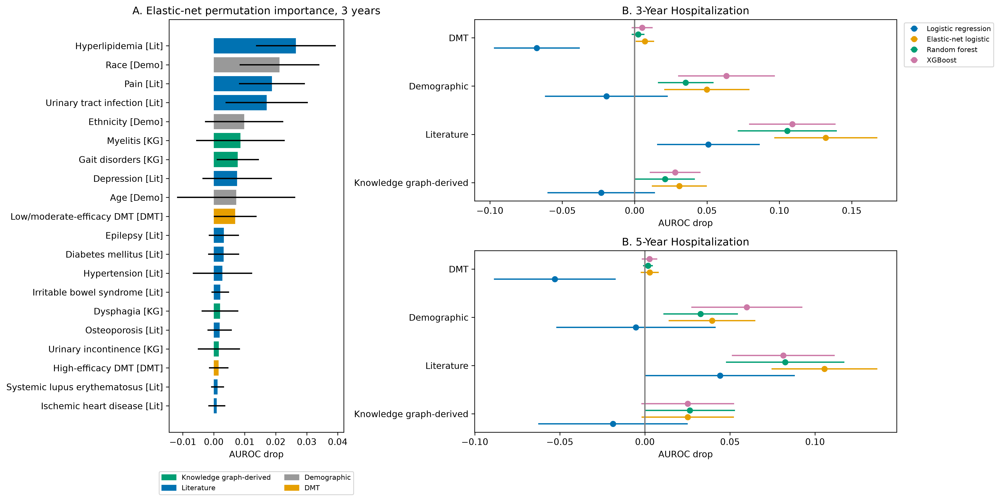
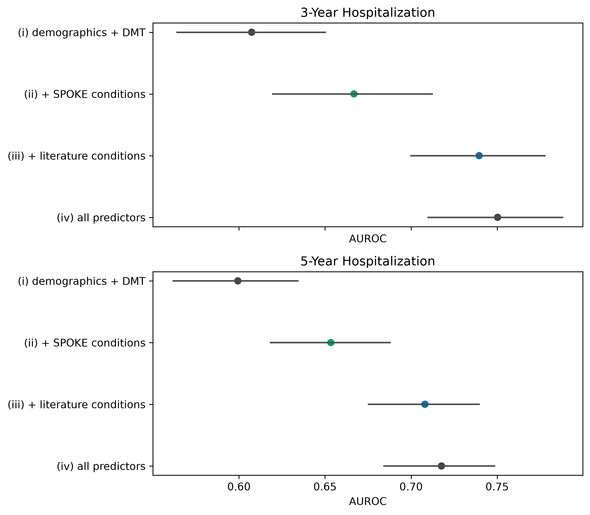

This is a methods demonstration, not a clinical prediction tool. It predicts hospitalization episodes beginning after year 1 through years 3 or 5 after first plausible MS diagnosis.
MS, condition, and DMT concept sets used standard concepts plus descendants (export/concept_sets/). Plausible-date exclusions are reported in plausibility_drops.csv. History required a visit 1,095 days before index; follow-up used index plus five calendar years. Predictors used the index -3 to +1 year window. Inpatient 9201/262 records were merged at a one-day gap. Age was median-imputed in the training pipeline. Categorical reference levels were selected once from whole-cohort category frequencies before CV, not within folds; this uses no outcomes. Four models used repeated 5x5 stratified outer CV, 3-fold inner log-loss tuning, and averaged patient OOF predictions; all CIs use 1,000 patient bootstrap resamples. See ms_flow.csv, variables.csv, cv_folds.csv, model_specification.csv, metrics.csv.
| step | n | n_removed |
|---|---|---|
| Any MS record | 13323 | 0 |
| Plausible MS record | 13018 | 305 |
| History criterion | 3942 | 9076 |
| Follow-up criterion (cohort) | 2244 | 1698 |
| outcome | events | candidate_parameters | events_per_parameter_ratio |
|---|---|---|---|
| 3-year | 174 | 63 | 2.761904761904762 |
| 5-year | 273 | 63 | 4.333333333333333 |
| outcome | model | n | events | event_rate | auroc | auroc_lower | auroc_upper | auprc | auprc_lower | auprc_upper | brier | brier_lower | brier_upper | calibration_intercept | intercept_lower | intercept_upper | calibration_slope | slope_lower | slope_upper |
|---|---|---|---|---|---|---|---|---|---|---|---|---|---|---|---|---|---|---|---|
| 3-year | Logistic regression | 2244 | 174 | 0.07754010695187166 | 0.7368871119995557 | 0.6952194617928598 | 0.7754444481436613 | 0.22327007085206937 | 0.17574924903035022 | 0.28617086716891443 | 0.06855565921463326 | 0.06000853477042375 | 0.07696218568649539 | -0.004101423271711899 | -0.1878806901004401 | 0.17305954066951482 | 0.620240782472611 | 0.45145155235635487 | 0.7688826083617311 |
| 3-year | Elastic-net logistic | 2244 | 174 | 0.07754010695187166 | 0.7534954744849798 | 0.7148813546879508 | 0.7906997839192825 | 0.24257620948100375 | 0.18808205601021624 | 0.30366182643988904 | 0.06607955810288374 | 0.058350046593068895 | 0.0753359320255263 | 0.0020154685923740416 | -0.15808756884469707 | 0.15672499190231048 | 1.1722999680949617 | 0.9981858600311511 | 1.364736906610747 |
| 3-year | Random forest | 2244 | 174 | 0.07754010695187166 | 0.7403381642512077 | 0.6987526850288479 | 0.7762147417325662 | 0.21784735697252636 | 0.17229947470962442 | 0.27733750218644754 | 0.06673504673393431 | 0.05852682180641247 | 0.07549784232124596 | 0.013141240847929187 | -0.14940114457406092 | 0.1676402676568026 | 1.1405785055788216 | 0.9326436937586522 | 1.3689077271115337 |
| 3-year | XGBoost | 2244 | 174 | 0.07754010695187166 | 0.7437031484257871 | 0.7058330645897625 | 0.7782036381793416 | 0.22586506794094605 | 0.17377185260091707 | 0.28381357687362513 | 0.06668088902076012 | 0.05811971603538611 | 0.0756886863726951 | 0.02195688971196673 | -0.14509022542389055 | 0.17258072209160388 | 1.0595208675468688 | 0.8794175181868485 | 1.2455134718441176 |
| 5-year | Logistic regression | 2244 | 273 | 0.12165775401069519 | 0.7085393889046857 | 0.674792889348056 | 0.7419196882090011 | 0.28108159202239225 | 0.23433263721694592 | 0.34018337890714967 | 0.10070504073884791 | 0.0909695299609599 | 0.11028646890028165 | -0.010108565308772702 | -0.16467994352523724 | 0.13429221673425587 | 0.6373378810434569 | 0.4763177639374995 | 0.7946752466019855 |
| 5-year | Elastic-net logistic | 2244 | 273 | 0.12165775401069519 | 0.720314523967492 | 0.6882152997960517 | 0.7505000406944836 | 0.3130315156103723 | 0.2611733089618621 | 0.36704862364544305 | 0.09744209595474417 | 0.08842451481923505 | 0.1070119346293505 | 0.0036367914326820815 | -0.1401286572093568 | 0.11904712462797876 | 1.151962463920917 | 0.9814328854452912 | 1.3124353876713486 |
| 5-year | Random forest | 2244 | 273 | 0.12165775401069519 | 0.7089631153558095 | 0.677918370175552 | 0.7423345407596924 | 0.2939787702392654 | 0.24619187507978177 | 0.34980737178144256 | 0.09883393898066983 | 0.08970409806669379 | 0.1084632864649083 | 0.00925818090105334 | -0.11867047739785172 | 0.12330550421560212 | 1.1613848846947696 | 0.9586867408150195 | 1.3742878684747204 |
| 5-year | XGBoost | 2244 | 273 | 0.12165775401069519 | 0.7145849246305869 | 0.6822235852250179 | 0.7440390929008528 | 0.3017895903925911 | 0.2548903282074644 | 0.3548713621213034 | 0.09795429277804892 | 0.08936475412751226 | 0.1082919216577067 | 0.005857934039944602 | -0.1318687993148652 | 0.13484897239157134 | 1.0471091444180853 | 0.8879529902581709 | 1.2102523468249937 |
| outcome | model | threshold | sensitivity | sensitivity_lower | sensitivity_upper | specificity | specificity_lower | specificity_upper | ppv | ppv_lower | ppv_upper | npv | npv_lower | npv_upper | f1 | f1_lower | f1_upper |
|---|---|---|---|---|---|---|---|---|---|---|---|---|---|---|---|---|---|
| 3-year | Logistic regression | 0.5 | suppressed | suppressed | suppressed | suppressed | suppressed | suppressed | suppressed | suppressed | suppressed | suppressed | suppressed | suppressed | suppressed | suppressed | suppressed |
| 3-year | Logistic regression | top 20% | 0.5 | 0.4374914617486339 | 0.5771651527663089 | 0.8251207729468599 | 0.8182672492652908 | 0.8325219084712756 | 0.19376391982182628 | 0.15812917594654788 | 0.23282889874353288 | 0.9515320334261839 | 0.9420612813370474 | 0.961571700968476 | 0.27929373996789725 | 0.23705522537562604 | 0.32647221785364317 |
| 3-year | Elastic-net logistic | 0.5 | suppressed | suppressed | suppressed | suppressed | suppressed | suppressed | suppressed | suppressed | suppressed | suppressed | suppressed | suppressed | suppressed | suppressed | suppressed |
| 3-year | Elastic-net logistic | top 20% | 0.5229885057471264 | 0.44789522058823533 | 0.5945945945945946 | 0.8270531400966183 | 0.81958495712631 | 0.833494279607983 | 0.2026726057906459 | 0.16443532889874354 | 0.24053452115812918 | 0.9537604456824512 | 0.9437012263099219 | 0.9632107023411371 | 0.29213483146067415 | 0.24279428205087447 | 0.336953728748068 |
| 3-year | Random forest | 0.5 | suppressed | suppressed | suppressed | suppressed | suppressed | suppressed | suppressed | suppressed | suppressed | suppressed | suppressed | suppressed | suppressed | suppressed | suppressed |
| 3-year | Random forest | top 20% | 0.46551724137931033 | 0.39762189564821143 | 0.5430157307845479 | 0.8222222222222222 | 0.8159516562396038 | 0.830082718916707 | 0.18040089086859687 | 0.14699331848552338 | 0.21777777777777776 | 0.9481894150417828 | 0.9370473537604457 | 0.9582300481445174 | 0.26003210272873195 | 0.21647819063004847 | 0.30726210044321817 |
| 3-year | XGBoost | 0.5 | suppressed | suppressed | suppressed | suppressed | suppressed | suppressed | suppressed | suppressed | suppressed | suppressed | suppressed | suppressed | suppressed | suppressed | suppressed |
| 3-year | XGBoost | top 20% | 0.5 | 0.4319297082228117 | 0.5733333333333334 | 0.8251207729468599 | 0.8187045045538371 | 0.8317909878473675 | 0.19376391982182628 | 0.15812917594654788 | 0.23162583518930957 | 0.9515320334261839 | 0.9420289855072463 | 0.9615389972144847 | 0.27929373996789725 | 0.23113038646746512 | 0.3265321991938299 |
| 5-year | Logistic regression | 0.5 | suppressed | suppressed | suppressed | suppressed | suppressed | suppressed | suppressed | suppressed | suppressed | suppressed | suppressed | suppressed | suppressed | suppressed | suppressed |
| 5-year | Logistic regression | top 20% | 0.4432234432234432 | 0.3880520865062443 | 0.5 | 0.8335870116692035 | 0.82533877124747 | 0.8413532654290837 | 0.26948775055679286 | 0.22939866369710468 | 0.30957683741648107 | 0.9153203342618385 | 0.901949860724234 | 0.9270194986072423 | 0.33518005540166207 | 0.28927987251130166 | 0.3772505690024948 |
| 5-year | Elastic-net logistic | 0.5 | suppressed | suppressed | suppressed | suppressed | suppressed | suppressed | suppressed | suppressed | suppressed | suppressed | suppressed | suppressed | suppressed | suppressed | suppressed |
| 5-year | Elastic-net logistic | top 20% | 0.43956043956043955 | 0.39114353945958813 | 0.5 | 0.8330796549974632 | 0.8256720024161884 | 0.8419521149890196 | 0.267260579064588 | 0.22939866369710468 | 0.311804008908686 | 0.9147632311977716 | 0.900210427516047 | 0.9286510590858417 | 0.33240997229916897 | 0.290856279356859 | 0.3801686809646019 |
| 5-year | Random forest | 0.5 | suppressed | suppressed | suppressed | suppressed | suppressed | suppressed | suppressed | suppressed | suppressed | suppressed | suppressed | suppressed | suppressed | suppressed | suppressed |
| 5-year | Random forest | top 20% | 0.42857142857142855 | 0.3759270189124689 | 0.48699594457587025 | 0.8315575849822425 | 0.8240959747344508 | 0.839306319251304 | 0.26057906458797325 | 0.2182628062360802 | 0.30444444444444446 | 0.913091922005571 | 0.8997214484679665 | 0.9259052924791087 | 0.32409972299168976 | 0.27925673930749517 | 0.3646102318415947 |
| 5-year | XGBoost | 0.5 | suppressed | suppressed | suppressed | suppressed | suppressed | suppressed | suppressed | suppressed | suppressed | suppressed | suppressed | suppressed | suppressed | suppressed | suppressed |
| 5-year | XGBoost | top 20% | 0.43956043956043955 | 0.3869470605022831 | 0.496096709280303 | 0.8330796549974632 | 0.8248241841238829 | 0.8414900313753525 | 0.267260579064588 | 0.22440126206384559 | 0.30957683741648107 | 0.9147632311977716 | 0.9024526198439242 | 0.927536231884058 | 0.33240997229916897 | 0.28854314002828857 | 0.3744840890000195 |
At threshold 0.5, values are suppressed where they could reveal a small implied contingency cell. No blank threshold metrics remain in the exported table.
| outcome | predictor_set | auroc | auroc_lower | auroc_upper |
|---|---|---|---|---|
| 3-year | (i) demographics + DMT | 0.6058193125659392 | 0.5613392603035828 | 0.6503637243331574 |
| 3-year | (ii) + SPOKE conditions | 0.6699677938808373 | 0.623213860842311 | 0.7143119040335073 |
| 3-year | (iii) + literature conditions | 0.7393830862346603 | 0.6998406629898534 | 0.7777246282461664 |
| 3-year | (iv) all predictors | 0.7534954744849797 | 0.7141491268976495 | 0.7910062714690442 |
| 5-year | (i) demographics + DMT | 0.599129688170784 | 0.5615925127403796 | 0.6345595684366474 |
| 5-year | (ii) + SPOKE conditions | 0.657423668839194 | 0.6235189985138128 | 0.6912758038815887 |
| 5-year | (iii) + literature conditions | 0.7093403805732573 | 0.6755169375483052 | 0.7414655891583425 |
| 5-year | (iv) all predictors | 0.720316382416839 | 0.686189218909734 | 0.7520514487031853 |
| outcome | comparison | delta | lower | upper |
|---|---|---|---|---|
| 3-year | (ii) - (i) | 0.06414848131489803 | 0.01771910743970968 | 0.10921420980361903 |
| 3-year | (iii) - (i) | 0.13356377366872108 | 0.08896543659035777 | 0.17723834619175194 |
| 3-year | (iv) - (i) | 0.14767616191904043 | 0.09410822517364151 | 0.192890232820551 |
| 3-year | (iv) - (iii) | 0.014112388250319352 | -0.001814437385306175 | 0.03273904874416543 |
| 5-year | (ii) - (i) | 0.05829398066840996 | 0.024767486151772013 | 0.09251438951276073 |
| 5-year | (iii) - (i) | 0.11021069240247328 | 0.07348802542561698 | 0.1487169421511686 |
| 5-year | (iv) - (i) | 0.121186694246055 | 0.07780088388905682 | 0.163701589640951 |
| 5-year | (iv) - (iii) | 0.010976001843581717 | -0.002041214780417566 | 0.02478520545912935 |
Group and variable permutation results are in importance_groups.csv and importance_variables.csv.




Cohort table: T_MS1.csv. Condition table: T_MS3.csv.
| Item | Where reported |
|---|---|
| Title and intended use | Purpose section |
| Participants and outcomes | Methods; ms_flow.csv; outcome_events.csv |
| Predictors and preprocessing | Methods; variables.csv; predictor_prevalence.csv |
| Sample size | Sample-size table; sample_size.csv |
| Model development | Methods; model_specification.csv |
| Internal validation | Methods; cv_folds.csv |
| Performance and calibration | Metrics and threshold tables; metrics.csv; roc_curves.csv; calibration_curves.csv |
| Interpretability and KG comparison | Predictor-set tables; importance files |
| Privacy, deviations, and choices | logs/decisions.csv; logs/checks.csv |
LOWESS, seeds, SQL semijoin, and other non-fixed choices are recorded in logs/decisions.csv.